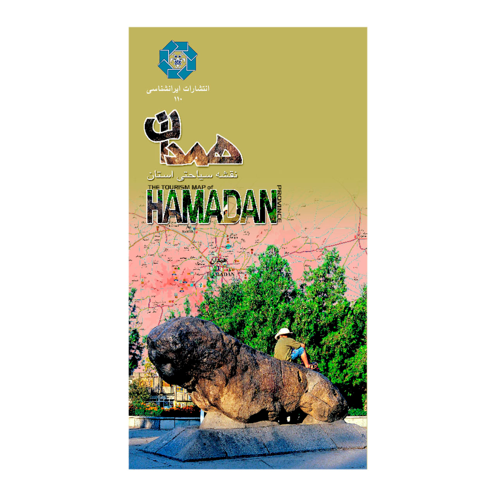

معرفی کتاب همدان: آثار باستانی و جاذبههای طبیعی و گردشگری
کتاب همدان: آثار باستانی و جاذبههای طبیعی و گردشگری نوشتهی حسین اصغرنژاد و مهرنوش قاضیانی، همدان و جاذبههای دیدنی آن را معرفی میکند. استان همدان دارای جاذبههای متنوع گردشگری است که میتواند برای مسافران بسیار دیدنی و جذاب باشد.
درباره کتاب همدان: آثار باستانی و جاذبههای طبیعی و گردشگری:
از قدیم توصیه بر این بوده که هنگام سفر به مکانهایی که شناخت درستی از آنها نداریم، راهنمایی با خود داشته باشیم. این راهنما میتواند هر چیزی مثل یک انسان آگاه، یک نقشهی جغرافیایی و یا یک کتاب باشد. اگر راهنمایی که در سفر از آن استفاده میکنیم، اطلاعاتی مفید و کارآمد از شهر مورد نظر ما داشته باشد، صرفهجویی در وقت، برنامهریزی آسان و در نهایت سفری متنوع و به یادماندنی را برای ما به ارمغان میآورد.
کتاب همدان: آثار باستانی و جاذبههای طبیعی و گردشگری به همین منظور تهیه شده و اطلاعاتی کاربردی از مناطق دیدنی همدان همراه با تصاویر آنها به ما ارائه میدهد.
استان همدان به دلیل ظرفیتهای بالقوه و بالفعل موجود دارای جاذبههای متنوع گردشگری است که جمعآوری آنها در یک کتاب کم حجم، کاری است بسیار دشوار! به همین خاطر سعی شده تنها جاذبههای گردشگری شهر همدان (آن هم به صورت گزیده) مورد توجه واقع شود. تنها غار علیصدر و شهر لالجین به دلیل اهمیت و موقعیت توریستی، در خارج محدوده شهر همدان انتخاب و معرفی شدهاند.
کتاب همدان: آثار باستانی و جاذبههای طبیعی و گردشگری مناسب چه کسانی است؟
علاقهمندان و گردشگرانی که میخواهند از آثار باستانی و تاریخی شهر همدان بازدید کرده و یا به برنامهریزی برای سفر به همدان و بازدید از این شهر نیاز دارند، میتوانند از این کتاب مفید بهره ببرند.
در بخشی از کتاب همدان: آثار باستانی و جاذبههای طبیعی و گردشگری میخوانیم:
آرامگاه استر و مرد خای
آرامگاه یا بُقعه اِستِر و مردخای جزء مهمترین زیارتگاههای یهودیان ایران و جهان است. این مقبره جزء آثار میراث فرهنگی ایران ثبت شدهاست. وجود این زیارتگاه، عامل مهمی در شکل گیری و تداوم حضور جامعه یهودی در همدان بودهاست.
در خصوص نام استر باید گفت که نام اصلی او "هدسه" بوده، اما چون به طرز شگفت آوری زیبا و خوش سیما بودهاست، نام استر یعنی ستاره را بر وی نهادهاند. وی دختر فردی به نام "ابی حایل" و همسر خشایارشاه بودهاست، که در حدود 500 سال قبل از میلاد مسیح در سرزمین پارس به دنیا آمده و بعد از فوت پدر و مادرش، عمویش (مردخای) سرپرستی او را بر عهده گرفته است.
مردخای، از خانواده شاول و از رجال دربار خشایارشا و مربی هدسه، برادرزاده خود بوده، که به منصب وزارت نیز رسیدهاست. وی پسر پائیز، از نوادههای یعقوب پیامبر و از نژاد بنیامین بودهاست.
